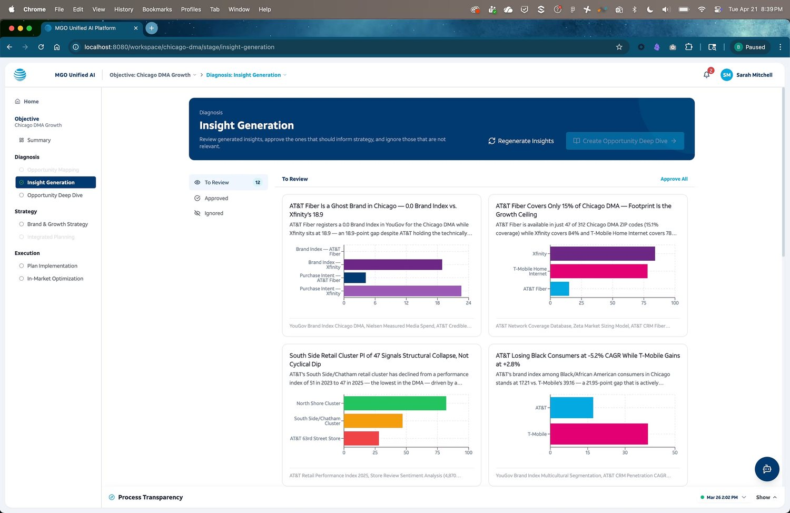
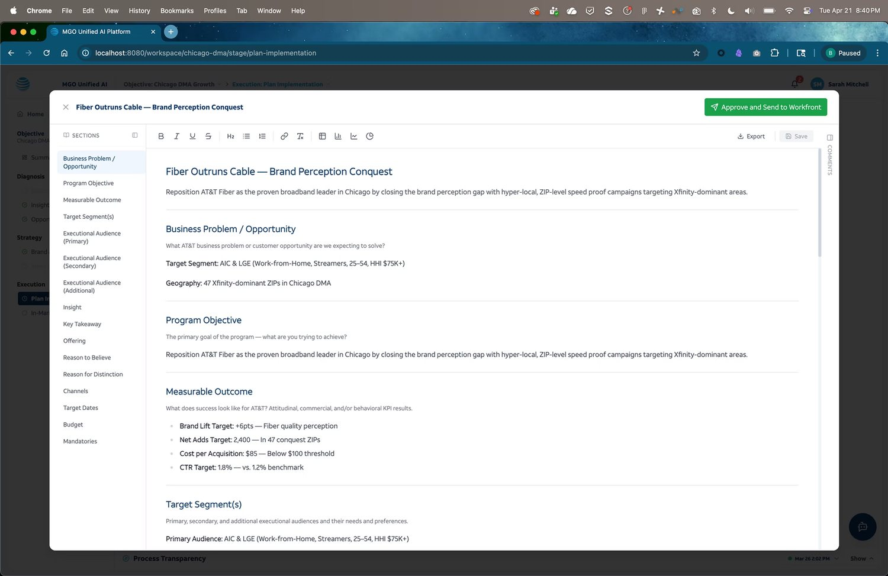
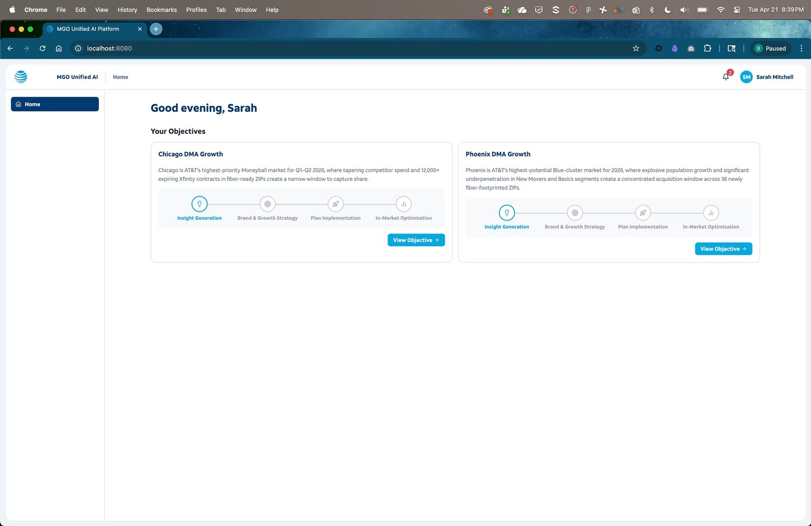
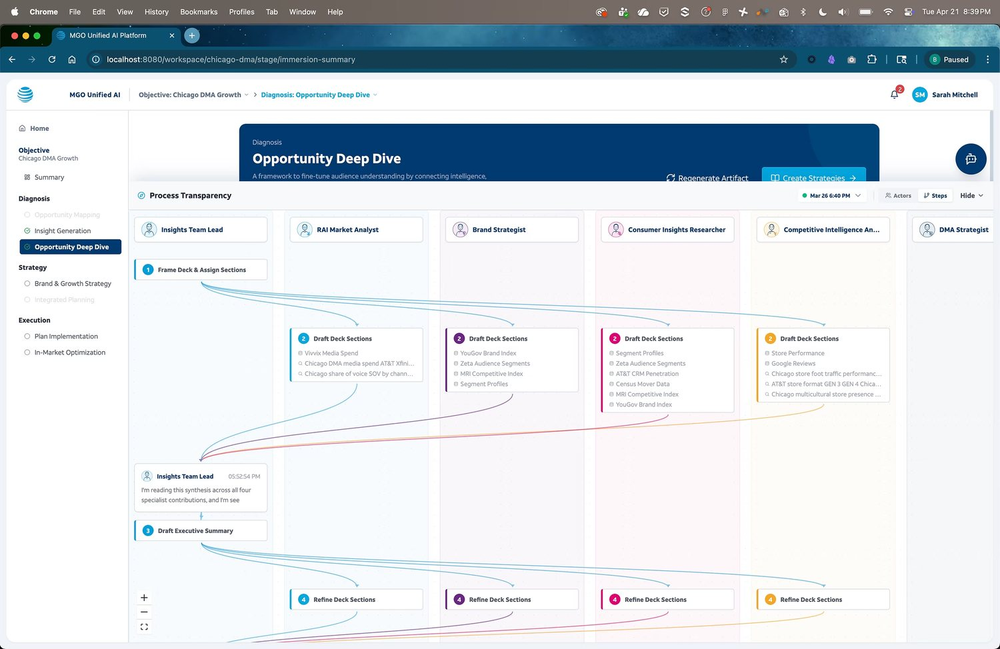
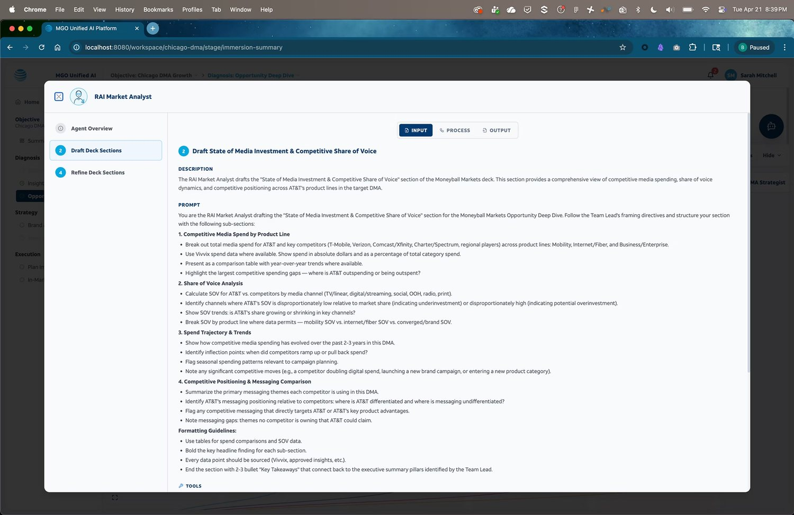
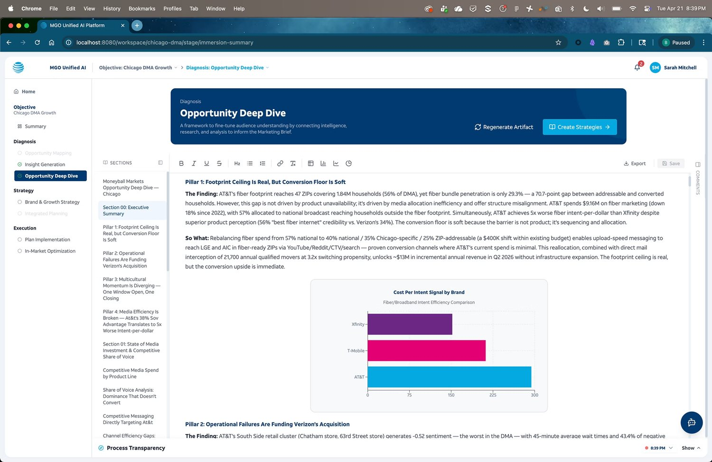
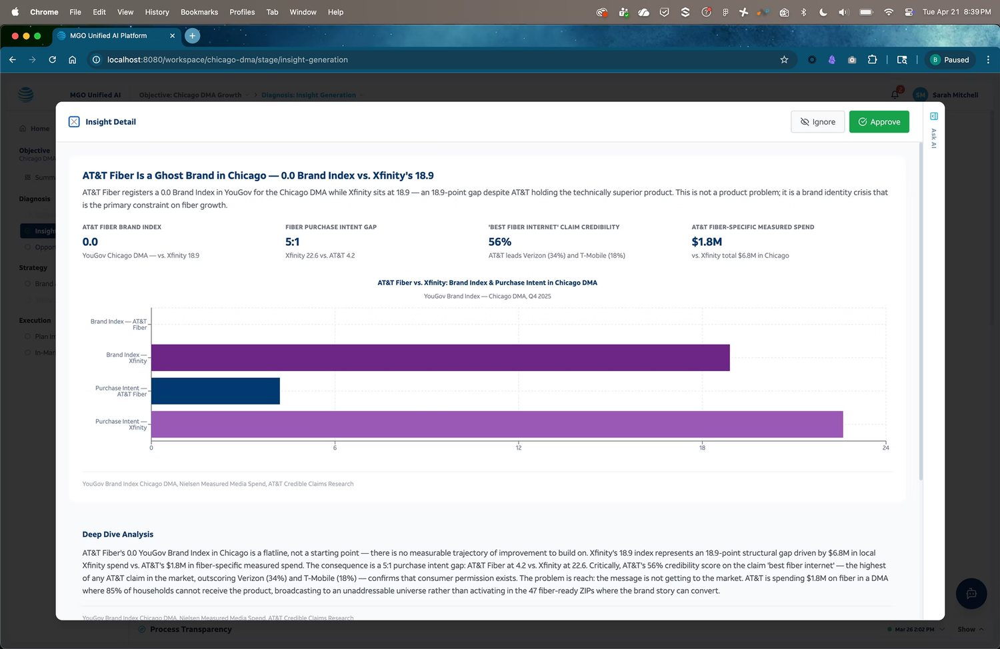
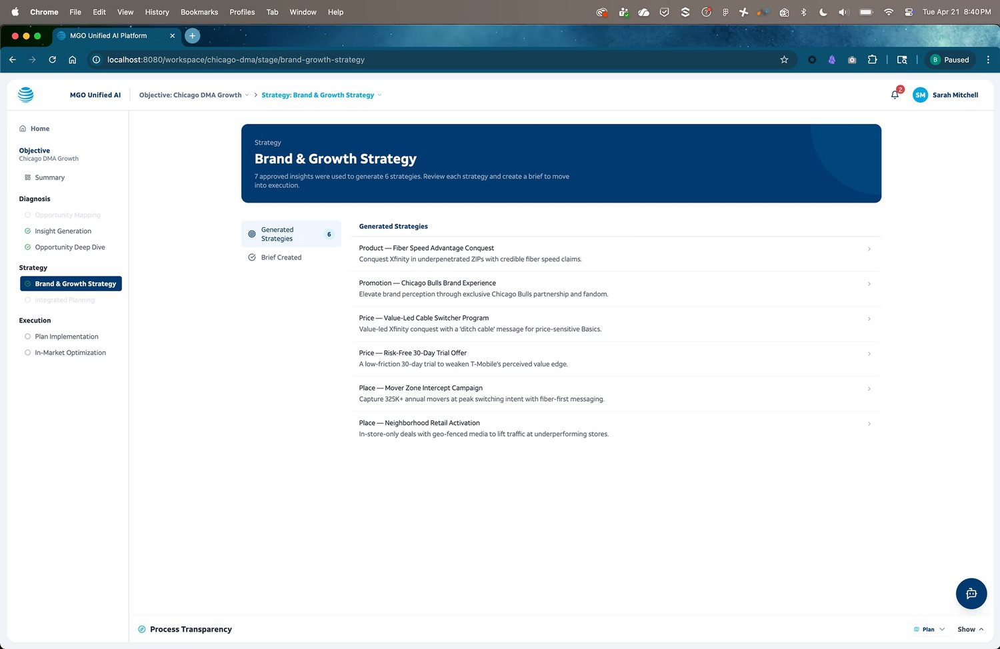

Agentic Marketing Intelligence
A fully agentic workflow that takes AT&T’s data insights all the way to a complete, ready-to-execute marketing brief — in minutes, not weeks. Built end-to-end with Claude Code on AT&T’s design system, with human oversight at every step.

A proof of concept that became a fully operational system
AT&T requested a proof of concept for an agentic marketing tool to speed up campaign building — a narrow brief to show how AI agents could plug into a brief-builder UI.
We went further. The delivered system is fully operational, built entirely with AI on AT&T’s design system and connected to their real shared data, so each run generates genuinely different outputs.
Designing the human-agent interface
The hard part wasn’t building the agents — it was the UI layer that makes agentic reasoning transparent, controllable, and trustworthy for marketers new to AI-first workflows.
- _01Data ingestionAgents pull from AT&T’s live sources and surface structured insights in real time.
- _02Transparent reasoningAgentic conversations are made visible — inputs, reasoning, and strategies exposed for review.
- _03Human touchpointsExplicit review gates let marketers approve, edit, or redirect output before proceeding.
- _04Brief generationFinal output is a fully formatted, ready-to-use marketing brief.
Outcomes
- _01Transparent human-agent UIInsight into reasoning plus clear human touchpoints — never a black box.
- _02Monitored AITracks inputs through to results, with nothing hidden.
- _03100% Claude Code UIThe entire interface generated on AT&T’s design system via Claude Code.
- _04Live dataMultiple integrated agents on real data — every run is unique.







